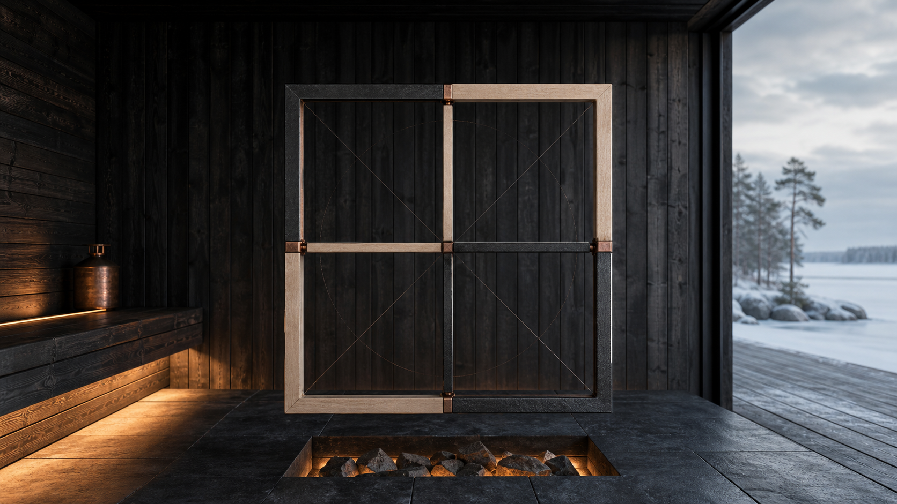

Första frysningen noteras.
Sammanföll med serverhallsexpansion. Ätten gjorde inget officiellt.
RUN A / regional händelse
Efter Kevne Kaisers andra frysning får regional offentlighet en återhållen webbyta: ett råd som lyssnar, mäter och dokumenterar utan att förklara sjön eller sälja platsen.
official-kandidat / ej release
Händelsestatus
Slusskedjan är komplett: syscall, väv, hiss, torgmöte, dubbelprotokoll, regional värdesluss och artifact. Human review återstår innan extern cirkulation.
Kall kronologi
Webbsamen visar bara den publicerbara tidskanten. Den interna teckenläsningen och själva torgmöteshandlingen stannar bakom slussen.
Sammanföll med serverhallsexpansion. Ätten gjorde inget officiellt.
Torgmötet tillsätter Kallvattenrådet. Frågan hålls öppen.
Om den sker krävs omprövning. Webben får inte föregripa den.
Spärrar
Den här sidan finns för att bygden inte ska lämnas ensam med oro, men den får inte göra oro till besöksnäring eller göra mönster av något som ännu är öppet.
Rådet drar inga slutsatser. Det lyssnar, mäter och dokumenterar.
Gravsamens bildveto står kvar. Mönstret visas inte som lockelse.
Status är kandidat. Cirkulation kräver mänsklig review.
Content order
Sidan behöver eventkort och protokollkant som gör regional status läsbar utan att bli release.
Webbsamen har lagt ordern; Krönikörsamen hör hemma i kontent_skribent.